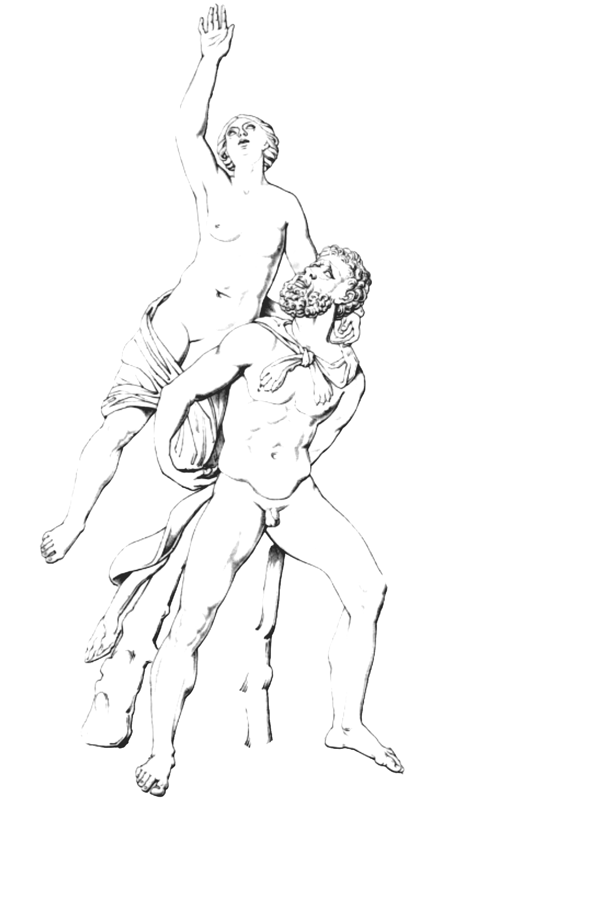
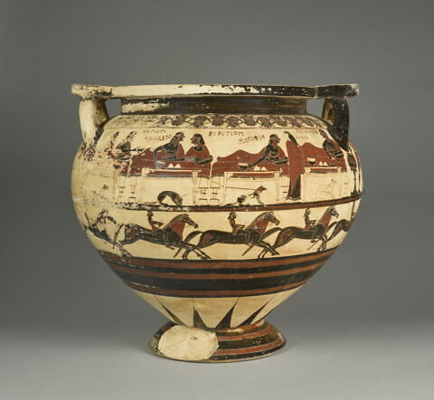
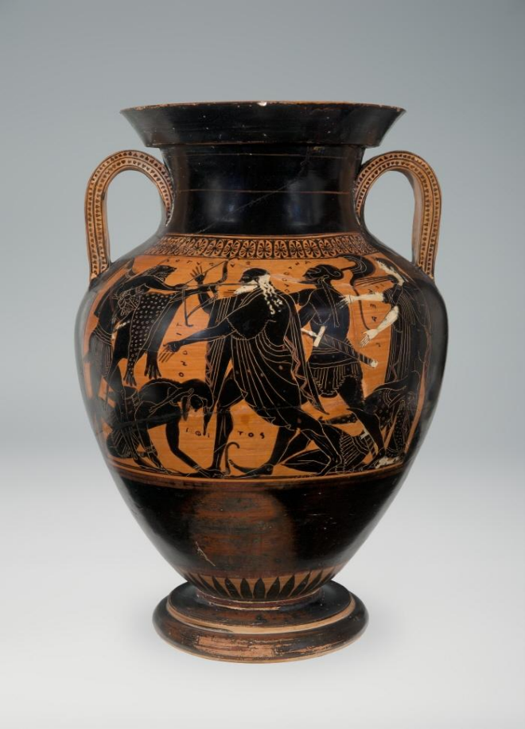
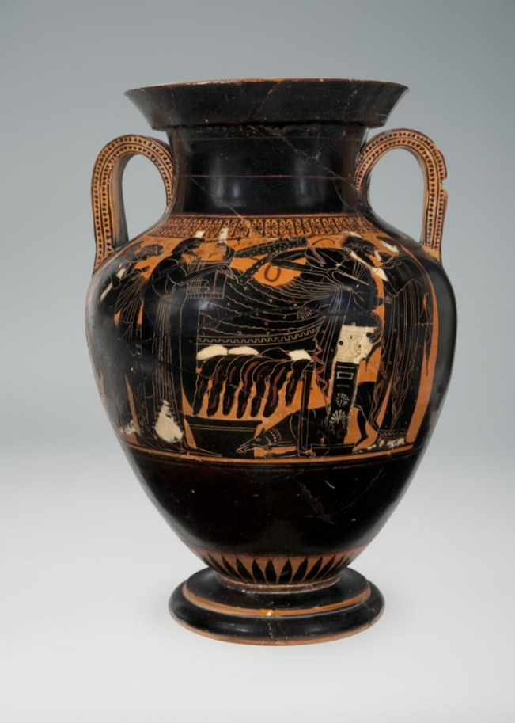
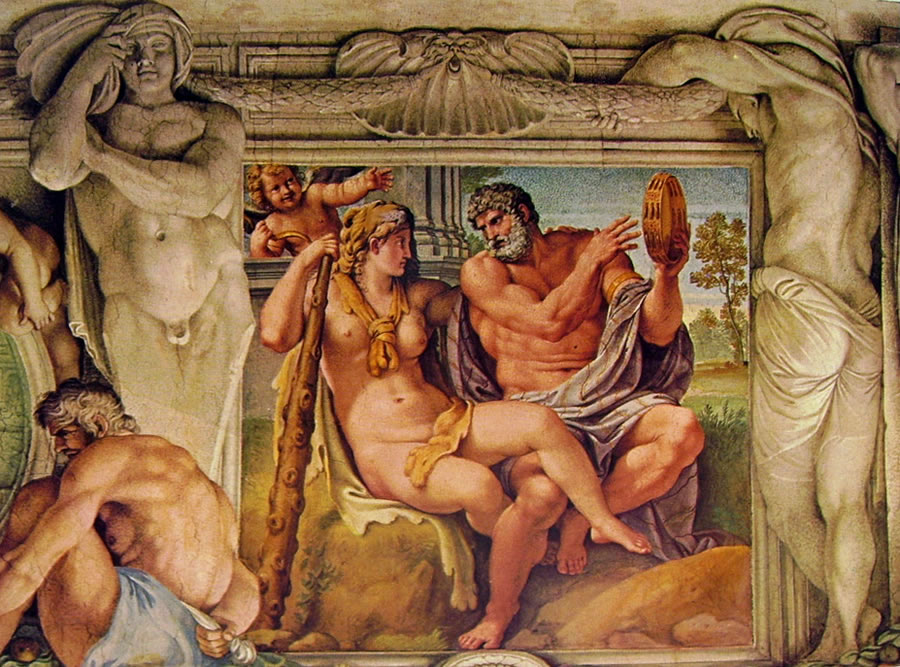
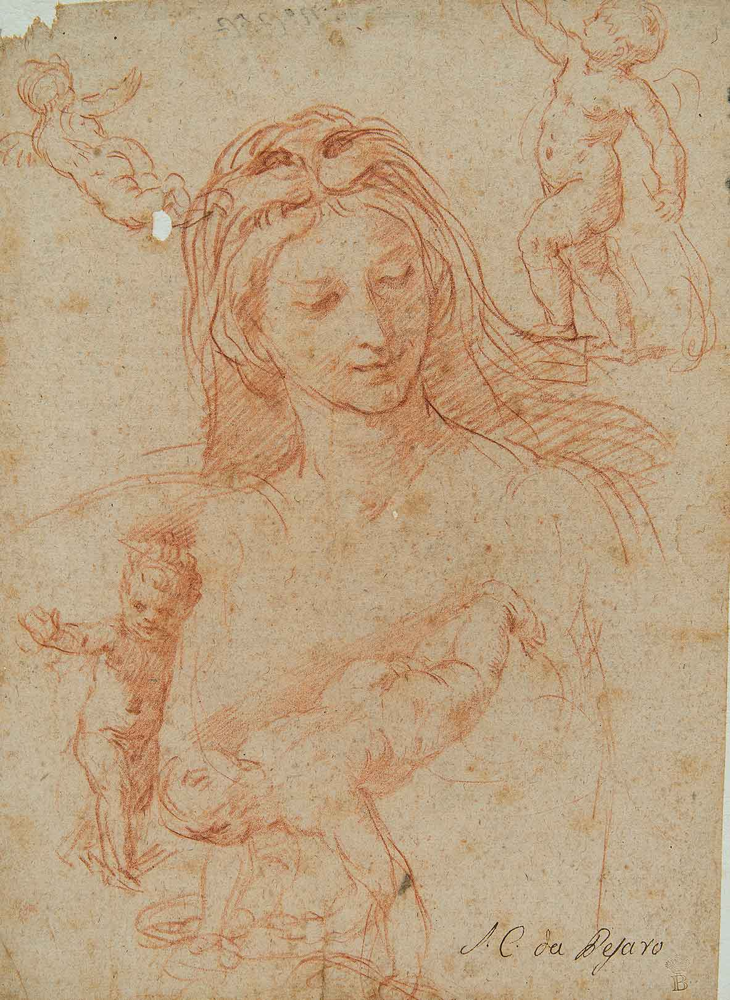
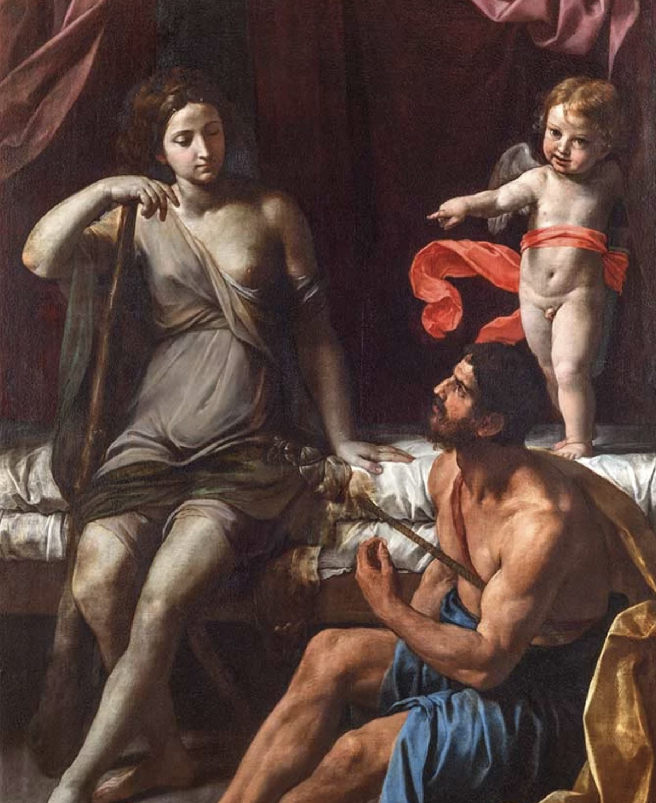
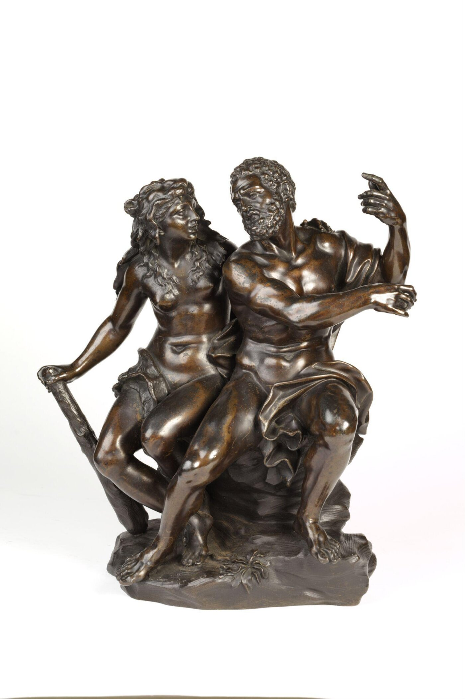
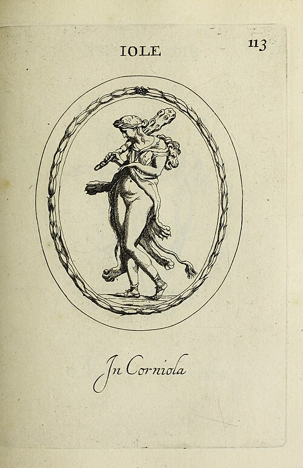
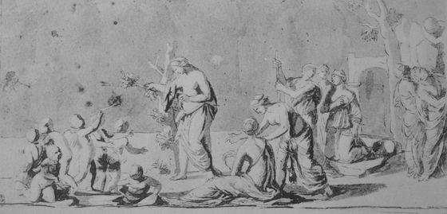

Iole:
una figura che
(non) ha voce

Chi è Iole?
Iole, figlia del re Eurito di Ecalia, è una principessa il cui destino si intreccia con le grandi imprese di Eracle, celebre eroe noto per le dodici fatiche che gli furono imposte da Euristeo per espiare la follia che lo aveva portato a uccidere la moglie Megara e i loro figli. L’episodio principale legato a Iole è la competizione di tiro con l’arco indetta dal padre, vinta da Eracle, ma il premio gli viene negato: l’eroe conquista la città con la forza, uccide Eurito e i suoi figli e rapisce Iole. Il racconto riportato fin qui è frutto di una tradizione che nei secoli ha subito rimaneggiamenti, alterando in parte le azioni dei protagonisti: dall’elevato status sociale di principessa, Iole viene ridotta a concubina, subordinata alla volontà dello straniero che se ne impossessa. La sua vicenda si intreccia anche con Deianira, la moglie di Eracle, e Ifito, suo fratello, offrendo uno sguardo sulle conseguenze delle azioni dell’eroe e su un mito che finora è stato marginale.
Le origini del mito
Sebbene il poema sia per gran parte perduto, frammenti successivi di Paniassi di Alicarnasso (Heraklea) consentono di ricostruire episodi come il banchetto alla corte di Eurito e la contesa per Iole, evidenziando il ruolo centrale del mito del ratto della fanciulla, tipico della tradizione epica indoeuropea. Curiosamente, nelle opere di Omero, Iole non compare: il poema iliadico si concentra su Elena, e nell’Odissea si menziona solo Ifito, fratello di Iole, nel contesto dello scambio di doni con Odisseo. La storia di Iole sarà invece ripresa e sviluppata nella tragedia del V secolo a.C. (Trachinie di Sofocle), nei lavori dei mitografi ( Ps.-Apollod. II, 7, 7 e II, 8, 2. , Diod. Sic. Bibl. IV, 31,1 e IV 37,5) e successivamente dagli autori latini (Ov. Her. IX; Met. IX e Sen. Herc. Oet.), delineando un percorso che dalla tradizione greca arcaica giunge fino al mito romano, e mostrando come la figura, pur marginale, resti fondamentale per comprendere le vicende di Eracle e dei personaggi a lui legati.Sulla base di queste testimonianze, il materiale è organizzato in 4 percorsi, approfonditi alla pagina seguente:
Percorsi
Galleria










